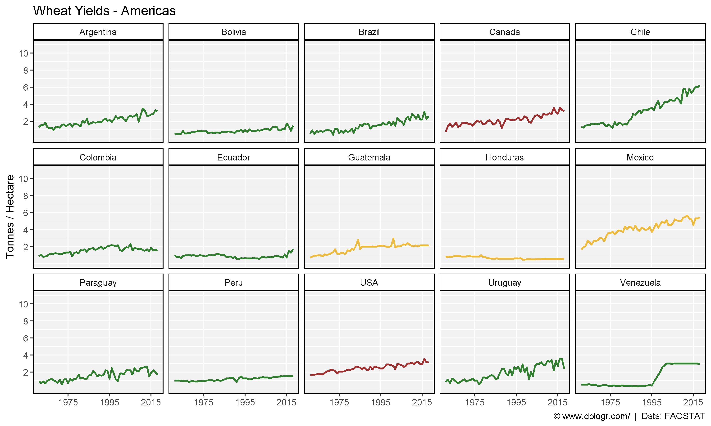
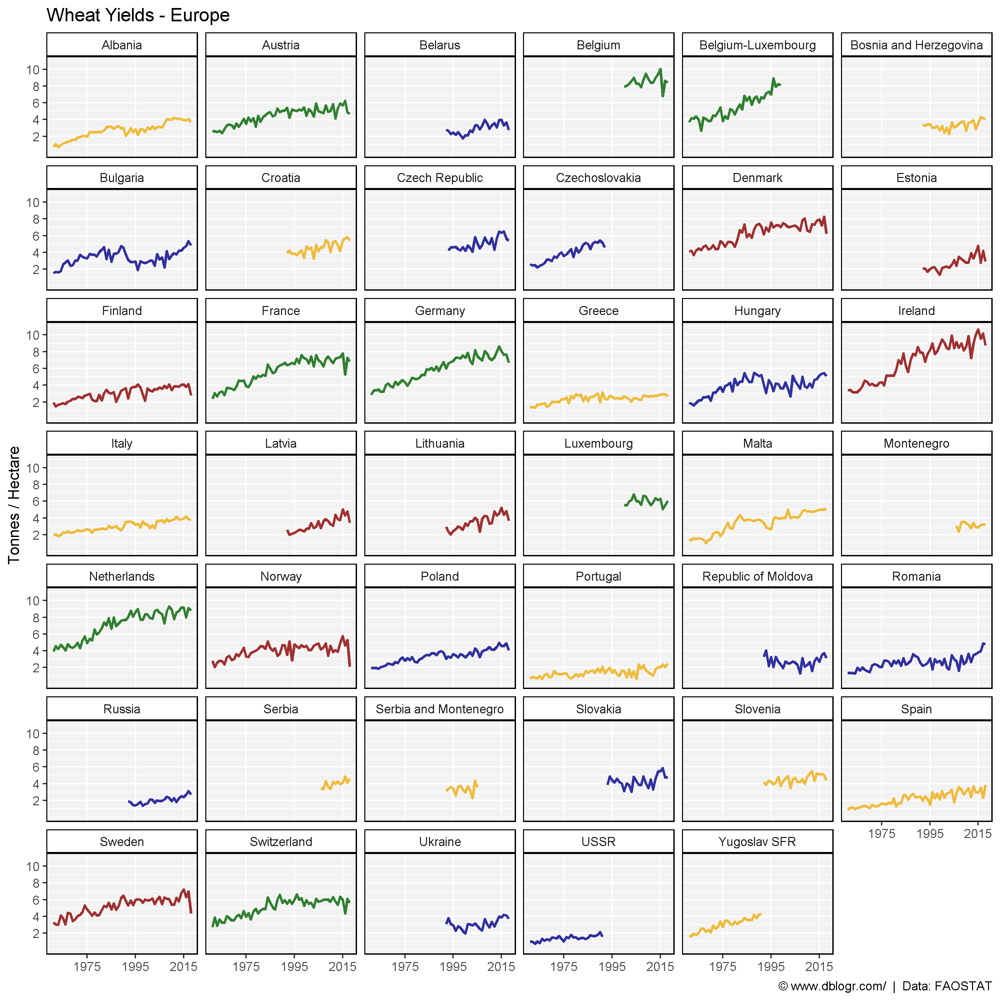
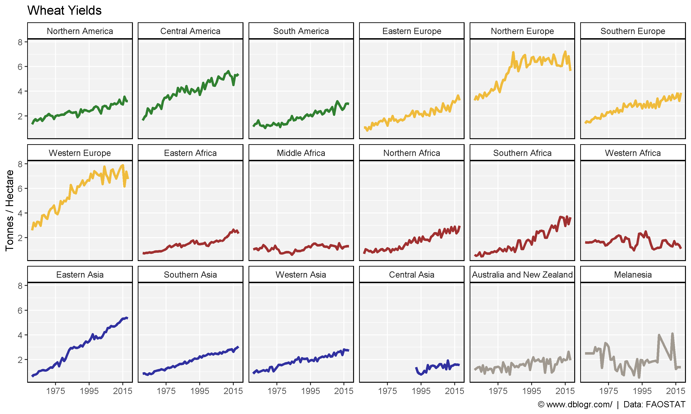
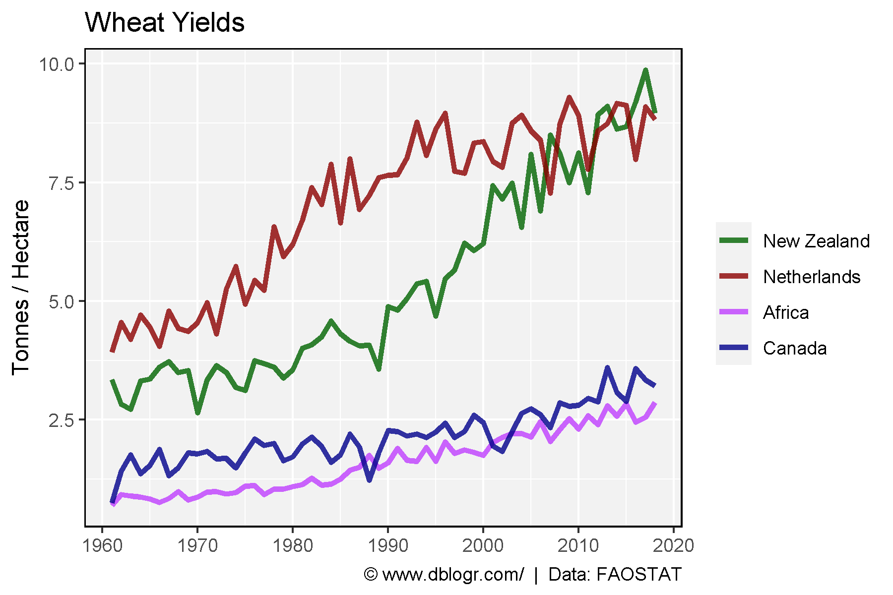
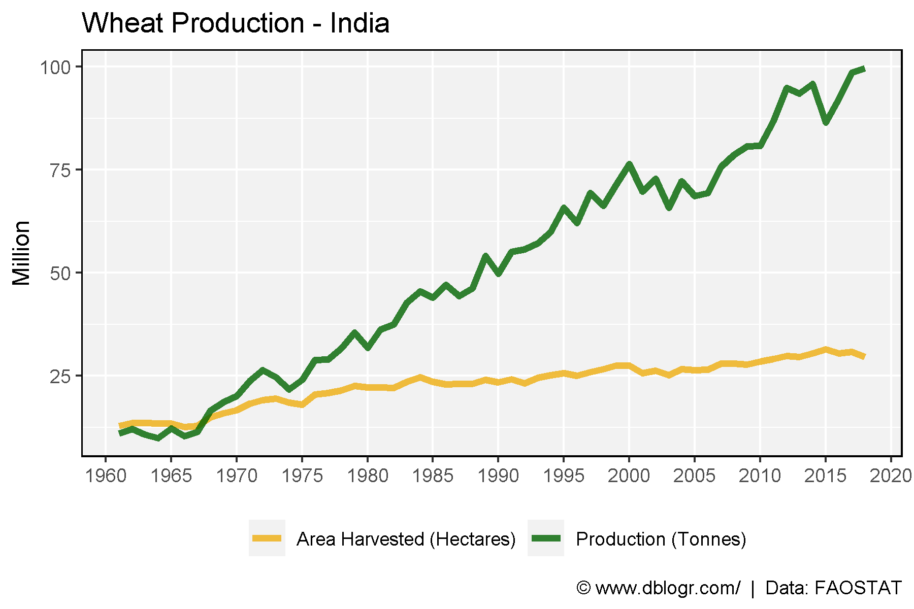

# devtools::install_github("derekmichaelwright/agData")
library(agData) # Loads: tidyverse, ggpubr, ggbeeswarm, ggrepel
SubRegions
# Prep data
colors <- c("darkgreen", "darkgoldenrod2", "darkred", "darkblue", "antiquewhite4")
xx <- agData_FAO_Crops %>%
filter(Crop == "Wheat", Measurement == "Yield",
Area %in% agData_FAO_Country_Table$SubRegion) %>%
left_join(agData_FAO_Country_Table, by = c("Area"="SubRegion"))
# Plot
mp <- ggplot(xx, aes(x = Year, y = Value)) +
geom_smooth(aes(color = Region, group = Area),
method = "loess", se = F, alpha = 0.7) +
scale_color_manual(values = colors) +
scale_x_continuous(breaks = seq(1960, 2020, 10)) +
theme_agData() +
labs(title = "A) SubRegions", y = "Tonnes / Hectare", x = NULL,
caption = "\xa9 www.dblogr.com/ | Data: FAOSTAT")
ggsave("wheat_yields_1_01.png", mp, width = 6, height = 4)

Regions
# Prep data
xx <- agData_FAO_Crops %>%
filter(Crop == "Wheat", Measurement == "Yield",
Area %in% agData_FAO_Country_Table$Country) %>%
left_join(agData_FAO_Country_Table, by = c("Area"="Country"))
x1 <- xx %>% filter(Region == "Americas")
x2 <- xx %>% filter(Region == "Europe")
x3 <- xx %>% filter(Region == "Africa")
x4 <- xx %>% filter(Region %in% c("Asia", "Oceania"))
# Create plot function
my_ggplot <- function(x, ncol){
colors <- c("darkgreen", "darkgoldenrod2", "darkred", "darkblue",
"antiquewhite4", "darkslategrey", "aquamarine4")
ggplot(x, aes(x = Year, y = Value, color = SubRegion) ) +
geom_line(size = 1, alpha = 0.8) +
facet_wrap(Area ~ ., ncol = ncol) +
theme_agData(legend.position = "none") +
scale_color_manual(values = colors) +
scale_x_continuous(breaks = seq(1975, 2015, by = 20), minor_breaks = NULL) +
scale_y_continuous(breaks = c(2, 4, 6, 8, 10)) +
coord_cartesian(ylim = c(0,11)) +
labs(y = "Tonnes / Hectare", x = NULL,
caption = "\xa9 www.dblogr.com/ | Data: FAOSTAT")
}
Americas
# Plot
mp <- my_ggplot(x1, 5) + labs(title = "Wheat Yields - Americas")
ggsave("wheat_yields_1_02.png", mp, width = 10, height = 6)

Europe
# Plot
mp <- my_ggplot(x2, 6) + labs(title = "Wheat Yields - Europe")
ggsave("wheat_yields_1_03.png", mp, width = 10, height = 10)

Africa
# Plot
mp <- my_ggplot(x3, 6) + labs(title = "Wheat Yields - Africa")
ggsave("wheat_yields_1_04.png", mp, width = 10, height = 10)

Aisa & Oceania
# Plot
mp <- my_ggplot(x4, 6) + labs(title = "Wheat Yields - Asia + Oceania")
ggsave("wheat_yields_1_05.png", mp, width = 10, height = 10)

# Prep data
colors <- c("darkgreen", "darkgoldenrod2", "darkred", "darkblue", "antiquewhite4")
xx <- agData_FAO_Crops %>%
filter(Crop == "Wheat", Measurement == "Yield",
Area %in% agData_FAO_Country_Table$SubRegion) %>%
left_join(agData_FAO_Country_Table, by = c("Area"="SubRegion")) %>%
arrange(Region) %>%
mutate(Area = factor(Area, levels = unique(Area)))
# Plot
mp <- ggplot(xx, aes(x = Year, y = Value, color = Region) ) +
geom_line(size = 1.25, alpha = 0.8) +
facet_wrap(Area~., ncol = 6) +
theme_agData() +
theme_agData(legend.position = "none") +
scale_color_manual(values = colors) +
scale_x_continuous(breaks = seq(1975, 2015, by = 20), minor_breaks = NULL) +
scale_y_continuous(breaks = c(2, 4, 6, 8)) +
labs(title = "Wheat Yields", y = "Tonnes / Hectare", x = NULL,
caption = "\xa9 www.dblogr.com/ | Data: FAOSTAT")
ggsave("wheat_yields_1_06.png", mp, width = 10, height = 6)

Max - Min
# Prep data
areas <- c("New Zealand", "Netherlands", "Africa", "Canada")
colors <- c("darkgreen", "darkred", "darkorchid1", "darkblue")
xx <- agData_FAO_Crops %>%
filter(Crop == "Wheat", Measurement == "Yield",
Area %in% areas) %>%
mutate(Area = factor(Area, levels = areas))
# Plot
mp <- ggplot(xx, aes(x = Year, y = Value, color = Area)) +
geom_line(size = 1.25, alpha = 0.8) +
scale_color_manual(name = NULL, values = colors) +
scale_x_continuous(breaks = seq(1960, 2020, 10)) +
theme_agData() +
labs(title = "Wheat Yields", x = NULL, y = "Tonnes / Hectare",
caption = "\xa9 www.dblogr.com/ | Data: FAOSTAT")
ggsave("wheat_yields_2_01.png", mp, width = 6, height = 4)

India
Yield
# Prep data
xx <- agData_FAO_Crops %>%
filter(Crop == "Wheat", Area == "India", Measurement == "Yield")
# Plot yield data
mp <- ggplot(xx %>% filter(Measurement =="Yield"), aes(x = Year, y = Value) ) +
geom_line(size = 1.5, alpha = 0.8, color = "darkblue") +
scale_x_continuous(breaks = seq(1960, 2020, 5), minor_breaks = NULL) +
theme_agData() +
labs(title = "Wheat Yields - India", y = "Tonnes / Hectare", x = NULL,
caption = "\xa9 www.dblogr.com/ | Data: FAOSTAT")
ggsave("wheat_yields_2_02.png", mp, width = 6, height = 4)

Area and Production
# Prep data
xx <- agData_FAO_Crops %>%
filter(Crop == "Wheat", Area == "India", Measurement != "Yield")
# Plot production data
mp <- ggplot(xx, aes(x = Year, y = Value/1000000, color = Measurement) ) +
geom_line(size = 1.5, alpha = 0.8) +
scale_x_continuous(breaks = seq(1960, 2020, 5), minor_breaks = NULL) +
scale_color_manual(name = NULL,
labels = c("Area Harvested (Hectares)", "Production (Tonnes)"),
values = c("darkgoldenrod2", "darkgreen")) +
theme_agData(legend.position = "bottom") +
labs(title = "Wheat Production - India", y = "Million", x = NULL,
caption = "\xa9 www.dblogr.com/ | Data: FAOSTAT")
ggsave("wheat_yields_2_03.png", mp, width = 6, height = 4)

Mexico
Yield
# Prep data
xx <- agData_FAO_Crops %>%
filter(Crop == "Wheat", Area == "Mexico", Measurement != "Yield")
# Plot production data
mp1 <- ggplot(xx, aes(x = Year, y = Value / 1000000, color = Measurement) ) +
geom_line(size = 1.5, alpha = 0.8) +
theme_agData(legend.position = "bottom") +
scale_color_manual(name = NULL, values = c("darkgreen", "darkgoldenrod2"),
labels = c("Area Harvested (Hectares)", "Production (Tonnes)")) +
scale_x_continuous(breaks = seq(1960, 2020, 5), minor_breaks = NULL) +
labs(title = "Wheat Production - Mexico", y = "Million", x = NULL,
caption = "\xa9 www.dblogr.com/ | Data: FAOSTAT")
ggsave("wheat_yields_2_04.png", mp1, width = 6, height = 4)

Area and Production
# Prep data
xx <- agData_FAO_Crops %>%
filter(Crop == "Wheat", Area == "Mexico", Measurement == "Yield")
# Plot yield data
mp2 <- ggplot(xx %>% filter(Measurement == "Yield"), aes(x = Year, y = Value) ) +
geom_line(size = 1.5, alpha = 0.8, color = "darkblue") +
scale_x_continuous(breaks = seq(1960, 2020, 5), minor_breaks = NULL) +
theme_agData() +
labs(title = "Wheat Yields - Mexico", y = "Tonnes / Hectare", x = NULL,
caption = "\xa9 www.dblogr.com/ | Data: FAOSTAT")
ggsave("wheat_yields_2_05.png", mp2, width = 6, height = 4)

Canadian Provinces
# Prep data
areas <- c("Alberta", "Saskatchewan", "Manitoba", "Ontario")
colors <- c("darkred", "darkgreen", "antiquewhite4", "darkblue")
xx <- agData_STATCAN_Crops %>%
filter(Crop == "Wheat", Measurement == "Yield",
Area %in% areas)
# Plot
mp <- ggplot(xx, aes(x = Year, y = Value / 1000, color = Area)) +
geom_line(size = 1, alpha = 0.2) +
geom_smooth(method = "loess", alpha = 0.8, se = F) +
scale_color_manual(name = NULL, values = colors) +
scale_x_continuous(breaks = seq(1900, 2025, 25), limits = c(1900,2025)) +
theme_agData(legend.position = "bottom") +
labs(title = "Wheat Yields",
y = "Tonnes / Hectare", x = NULL,
caption = "Data: STATCAN")
ggsave("wheat_yields_2_06.png", mp, width = 6, height = 4)

© Derek Michael Wright www.dblogr.com/